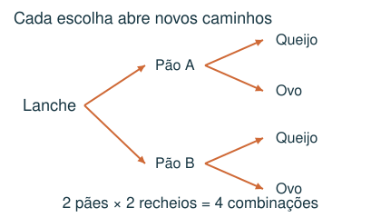
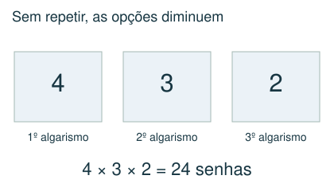
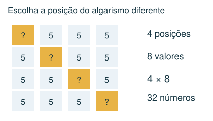
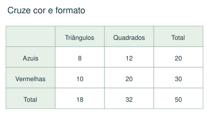

1 Básico
Quantas senhas de 3 algarismos distintos podem ser feitas com 1, 2, 3 e 4?
- A) 64
- B) 16
- C) 24
- D) 12
Meu raciocínio
CAPÍTULO 09 · MATEMÁTICA · 6º ANO
Contar sem repetir nem esquecer possibilidades.
1. Observe → 2. Entenda → 3. Resolva → 4. Confira
OBSERVE E COMPREENDA · 1

Uma lista organizada é uma ferramenta matemática. Separe casos por primeiro algarismo, posição ou categoria. Cada possibilidade deve entrar uma única vez. Uma árvore mostra as escolhas sucessivas, especialmente quando algumas deixam de estar disponíveis.
Se há 3 escolhas para a primeira etapa e, para cada uma, 4 para a segunda, existem 3 × 4 = 12 combinações. Sem repetição, o número de opções diminui: senhas de 3 dígitos distintos escolhidos entre 1, 2, 3 e 4 dão 4 × 3 × 2 = 24.
Em um número de quatro algarismos com exatamente três algarismos 7, escolha a posição do algarismo diferente (4 opções) e seu valor. Se zero é proibido, esse valor tem 8 opções: 1 a 9, exceto 7. Total: 4 × 8 = 32. “Pelo menos três” incluiria também 7777.
OBSERVE E COMPREENDA · 2

Quando há duas classificações, como cor e formato, faça uma tabela. Totais de linhas e colunas precisam concordar. Preencha primeiro os valores conhecidos; use subtração para os complementos e relações como “o dobro” para dividir um subtotal.
Códigos podem começar por zero se isso for permitido; números de quatro algarismos não podem. Ao terminar, compare seu total com uma contagem alternativa ou enumere um exemplo menor. Não use uma fórmula cujo significado não consiga explicar.
VAMOS RESOLVER JUNTOS · 1
Quantos números de quatro algarismos usam exatamente três algarismos 5 e outro algarismo de 1 a 9 diferente de 5?

Há 4 posições para o diferente e 8 escolhas para seu valor. Total: 32.
VAMOS RESOLVER JUNTOS · 2
Há 50 peças: 20 azuis e 30 vermelhas. Das azuis, 8 são triângulos. Das vermelhas, há o dobro de quadrados que triângulos. Quantos quadrados existem?

Azuis: 20 − 8 = 12 quadrados. Vermelhas: 30 ÷ 3 = 10 triângulos e 20 quadrados. Total: 32 quadrados.
AGORA É COM VOCÊ
Registre suas contas no caderno ou imprima esta página. Explique como chegou à resposta.
Quantas senhas de 3 algarismos distintos podem ser feitas com 1, 2, 3 e 4?
Quantos números de quatro algarismos, sem zero, têm exatamente três algarismos iguais a 7?
Há 60 peças: 24 azuis e 36 vermelhas. Entre as azuis, 10 são triângulos. Entre as vermelhas, o número de quadrados é o dobro do de triângulos. Todas são quadrados ou triângulos. Quantos quadrados há?
Um lanche é formado por um pão, um recheio e uma bebida. Há 2 tipos de pão, 3 recheios e 4 bebidas, sem restrições. Quantos lanches diferentes são possíveis?
Quantos números de 3 algarismos distintos podem ser formados usando apenas 0, 1, 2 e 3?
CONFERIR TAMBÉM É APRENDER
Abra cada resposta depois de tentar resolver.
C) 24. Há 4 escolhas para o primeiro, 3 para o segundo e 2 para o terceiro: 4 × 3 × 2 = 24.
B) 32. Escolha a posição do algarismo diferente: 4 opções. Ele pode ser 1,2,3,4,5,6,8 ou 9: 8 opções. Total 4 × 8 = 32.
A) 38. Quadrados azuis: 24 − 10 = 14. Vermelhos: 36 ÷ 3 × 2 = 24. Total: 38.
D) 24. Cada escolha de pão permite 3 recheios; cada par permite 4 bebidas. 2 × 3 × 4 = 24.
C) 18. A centena não pode ser zero: 3 opções. Sobram 3 opções para a dezena, incluindo zero, e 2 para a unidade: 3 × 3 × 2 = 18.
Estas questões originais trabalham o tópico. Os recortes incluem resoluções publicadas.